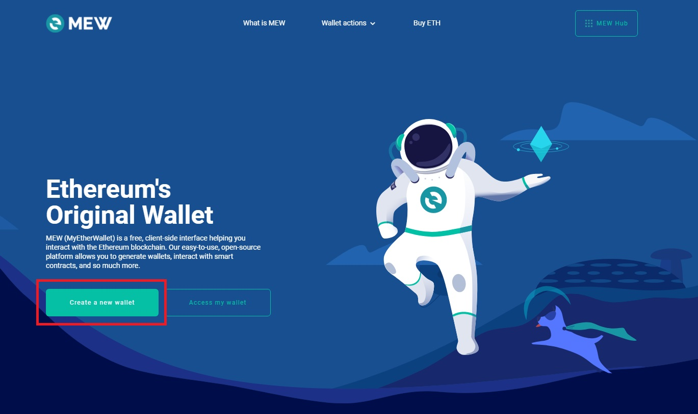

ETH address setup tutorial
Hello! This page is meant as a tutorial for those Astrobin photographers who need support with setting up their wallet and address, in order to receive payouts when an NFT is sold.
The easiest way is to use an online tool called MyEtherWallet (https://www.myetherwallet.com).
A wallet can be created either via their app, or directly through the website.
Using the app is more straighforward and requires less manual intervention.
Using the website requires you to store in a safe place a 12-words password (for instance in a password manager or an encrypted file).
We recommend you to use the app and refer to its onboarding tutorial once you launch it.
If you prefer to use the website, here follows a quick tutorial. The website will warn that this approach is not recommended: it is no different than what the app would do, but as mentioned, you will be required to custody the passowrd in a safe manner.
Step 1: create your wallet
Visit MyEtherWallet and click on "Create A New Wallet".

Step 2: store your password
You should be prompted with a list of 12 words. This is the password to your wallet. It's called "mnemonic". Write it down somewhere safe, in a password manager or an encrypted file. Needless to say, you must not share these words with anyone. In the next steps you will be required to verify some words.
Step 3: get your wallet address
You can now access your wallet and get your ETH address. You will need the 12 words you saved previously.
We need to access the Ethereum network, so this is fine. Click Next.
You don't need to access your wallet, although you can if you want to. What is important is to copy one of the addresses associated to your wallet.
You can click on the COPY button next to the first one.
Step 4: share your address with us
Send us an email with your Astrobin username and the ETH address you copied on the previous step. We will be using this address to send the payouts of the sales of your NFTs.